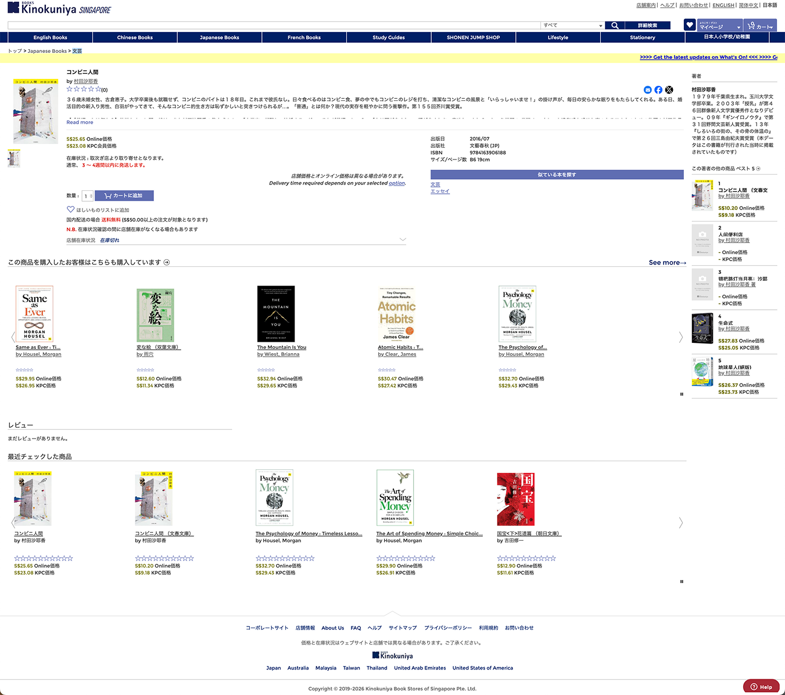
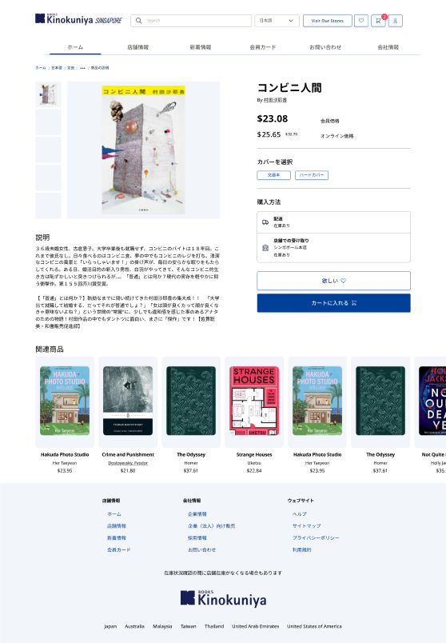
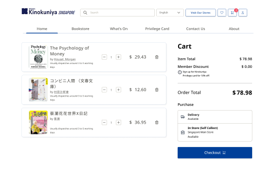

The project
Kinokuniya is a Japanese bookstore chain with an extensive collection of books in English, Japanese, and Chinese. Their multi-lingual online website is central to how international customers discover and buy books — but the experience hadn't been designed with language switching in mind. The goal was to build a design system that works equally well across all three writing systems, reducing cognitive load and increasing purchase confidence for each audience.
Focus
Multi-lingual design system
Languages
English · Chinese · Japanese
Output
Typography scale + redesigned purchase flow
The challenge
We identified that a design system for Kinokuniya's online website needed to improve how users process information and assess book availability — making it easier to reach a purchase decision regardless of which language they were browsing in.


My role
Lead the design of a multi-lingual design system for the website, focusing on purchase information hierarchy and cross-language readability.
My hypothesis
A consistent typographic scale and layout structure — adapted for the density of each writing system — would reduce cognitive load and increase purchase completion rates.
Problems identified
Three distinct friction points emerged from reviewing the existing site across all three language versions — each compounding the others.
01
Hard for users to make a purchase decision
Key information like price and availability doesn't stand out from surrounding content. Users have to scan the entire page to find what they need, creating unnecessary cognitive load before they can even begin to decide.
02
Shopping cart layout is unclear
The purchase flow lacks clear visual hierarchy. Users struggle to distinguish between book details, quantity selectors, and order totals — causing hesitation and drop-off before reaching checkout.
03
Difficult to read in Chinese or Japanese
Asian characters are visually denser than Latin script. Using the same font size and line height across all languages makes CJK text significantly harder to scan — switching languages increases the reading effort, not just the content.
"A design system that doesn't account for script differences isn't a multilingual system — it's an English system with translated text."
Reducing friction for purchase
The redesign treats the product page as a decision-making tool rather than a catalogue entry. Two structural changes make it dramatically easier for a user to act — regardless of which language they are browsing in.
Structure the page to group key buying information
Information needed to make a purchase decision — price, format, availability — is grouped on the right side of the page. The common region creates a clear visual anchor so users always know where to look, removing the need to scan the whole page regardless of which language is active.
Break the purchase decision into smaller, clearer steps
The purchase flow is restructured into a sequential decision tool — format, quantity, delivery — reducing the number of choices visible at once. This removes the paralysis of an all-at-once form, making each step feel manageable and increasing the likelihood of completion across all language audiences.

Improving readability across languages
The most technically nuanced part of the project was building a type scale that feels balanced when content switches between English, Japanese, and Chinese — not just translated, but genuinely adapted for each script's visual density.
"Japanese text at 16px requires different treatment to English at 16px. Size is only half the equation — weight, line height, and spacing need to adapt with it."
Visual balance when switching languages
Rubik is the most visually balanced font across all three scripts. The type scale uses Header L, M, and S — defined to feel equivalent across EN, JP, and CN, not identical. Each size is calibrated to produce the same visual weight and reading comfort regardless of script.
Readability for denser characters
To represent CJK characters' features more clearly, a lighter font weight (Normal or Medium) is used for text sizes below 16px. Japanese and Chinese text also benefits from slightly higher line spacing to prevent characters from visually merging when dense.
| Style | English | px | Japanese 日本語 | px | Traditional Chinese 繁體中文 | px |
|---|---|---|---|---|---|---|
| Header L | Header L | 32 | 大見出し L | 32 | 大標題 L | 32 |
| Header M | Header M | 22 | 大見出し M | 22 | 大標題 M | 22 |
| Header S | Header S | 16 | 大見出し S | 16 | 大標題 S | 16 |
| Body | Body text | 14 | 本文テキスト | 14 | 內文文字 | 14 |
Measuring effectiveness
While design changes are rarely instant, the metrics chosen to track the impact of the design changes were tied directly to the problems identified — ensuring the system could be validated and iterated on with real user data rather than assumptions.
↑ CVR
Online purchase conversion rate — tracked before and after to measure whether the simplified decision flow reduced drop-off at key steps
3 langs
A single design system governing typography, spacing, and layout consistently across English, Japanese, and Chinese simultaneously
↓ Load
Reduced cognitive load through a simplified purchase funnel — fewer steps, clearer hierarchy, less hesitation before committing to buy
Designing for a global audience
This project sharpened my understanding of what "global design" actually means in practice. It's not about translation — it's about adapting the entire system to feel native to each audience. That distinction matters enormously for any product expanding into Asian markets, where script, reading rhythm, and cultural context all shape how users experience a page.